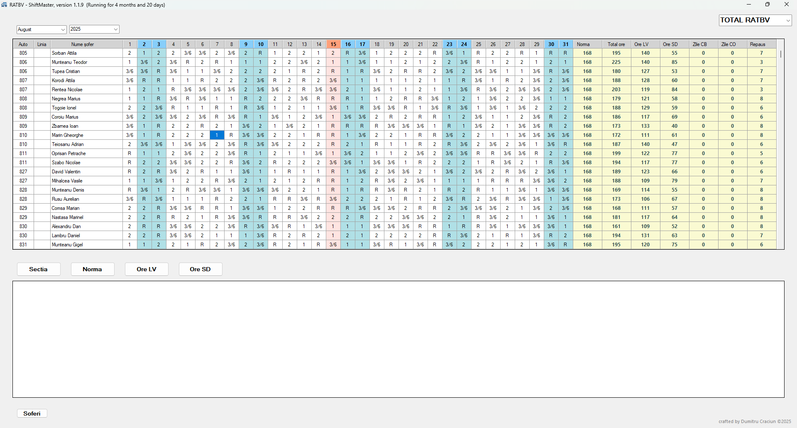
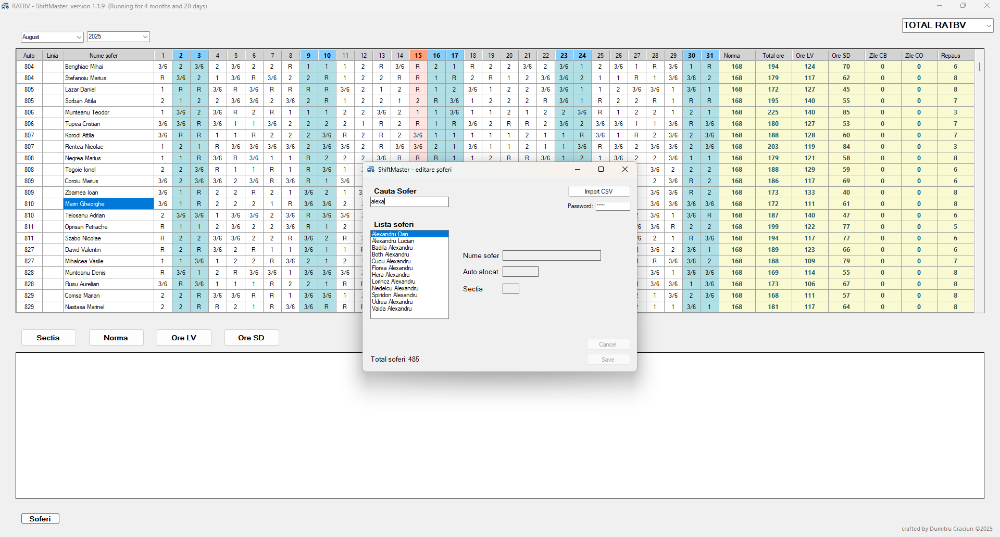

ShiftMaster - Bus Driver Scheduling System (C# / .NET)
ShiftMaster is a personal learning project developed to explore core backend and application design concepts in C# and .NET. The focus of the project was on building a structured, multi-layered system from scratch, including database design, data access, and business rule implementation.


- Designed and implemented a relational SQL database schema for drivers, routes, and scheduling data
- Built a multi-layer architecture (UI, Business Logic, Data Access) to separate concerns
- Implemented data access using structured queries and encapsulated CRUD operations
- Used object-oriented principles (classes, properties with getters/setters) for domain modeling
- Developed validation logic in the business layer to enforce scheduling constraints
- Handled edge cases such as overlapping assignments and unavailable resources
- Practiced clean code structure and modular design for maintainability
- Prepared the application for future extension (e.g. API layer or service integration)